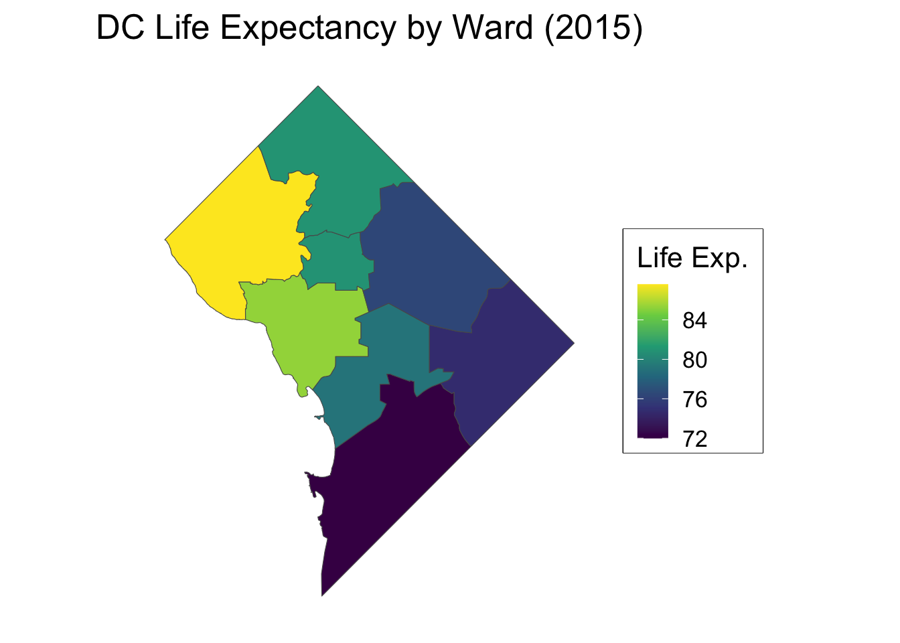

Code
source("../_globals.r")
lexp_df <- read.csv("assets/lexp_by_ward.csv")
plot(
lexp_df$ward, lexp_df$life_exp,
main="DC Life Expectancy by Ward (2015)",
xlab="Ward", ylab="Life Expectancy",
pch=19, cex.lab=2, cex.main=2, cex.axis=2
)
Week 8, Part 1
source("../_globals.r")
lexp_df <- read.csv("assets/lexp_by_ward.csv")
plot(
lexp_df$ward, lexp_df$life_exp,
main="DC Life Expectancy by Ward (2015)",
xlab="Ward", ylab="Life Expectancy",
pch=19, cex.lab=2, cex.main=2, cex.axis=2
)
library(tidyverse)── Attaching core tidyverse packages ──────────────────────── tidyverse 2.0.0 ──
✔ dplyr 1.1.2 ✔ readr 2.1.4
✔ forcats 1.0.0 ✔ stringr 1.5.1
✔ lubridate 1.9.2 ✔ tibble 3.2.1
✔ purrr 1.0.2 ✔ tidyr 1.3.0
── Conflicts ────────────────────────────────────────── tidyverse_conflicts() ──
✖ dplyr::filter() masks stats::filter()
✖ dplyr::lag() masks stats::lag()
ℹ Use the conflicted package (<http://conflicted.r-lib.org/>) to force all conflicts to become errorsus_mean <- 78.69
lexp_df <- read_csv("assets/lexp_by_ward.csv")Rows: 8 Columns: 3
── Column specification ────────────────────────────────────────────────────────
Delimiter: ","
dbl (3): year, ward, life_exp
ℹ Use `spec()` to retrieve the full column specification for this data.
ℹ Specify the column types or set `show_col_types = FALSE` to quiet this message.lexp_df <- lexp_df |> mutate(
above_avg = ifelse(life_exp > us_mean, "Above Mean", "Below Mean")
)
lexp_df |> ggplot(aes(x=as.factor(ward), y=life_exp, color=above_avg)) +
geom_point(size=5) +
geom_segment(
aes(xend=ward, yend=us_mean),
linewidth=1.5
) +
geom_hline(
aes(
yintercept=us_mean,
linetype="National Mean"
),
linewidth=1
) +
dsan_theme("half") +
theme(
plot.title = element_text(hjust = 0.5)
) +
labs(
x = "Ward",
y = "Life Expectancy",
title = "DC Life Expectancy by Ward (2015)"
) +
scale_linetype_manual("test", values=c("dashed")) +
remove_legend_title()
(All using the same syntax)
library(sf)Linking to GEOS 3.11.0, GDAL 3.5.3, PROJ 9.1.0; sf_use_s2() is TRUEmy_sf <- read_sf("assets/Wards_from_2022.geojson")
my_sf_merged <- my_sf |> left_join(
lexp_df, by=c("WARD"="ward")
)
my_sf_merged |> ggplot(aes(fill=life_exp)) +
geom_sf() +
dsan_theme() +
theme(
axis.line = element_blank(),
axis.text = element_blank(),
axis.ticks = element_blank()
) +
labs(
title = "DC Life Expectancy by Ward (2015)",
fill = "Life Exp."
) +
scale_fill_viridis_c()